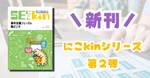

kintoneGeeks blog
https://kintone-geeks.hatenablog.com/
kintoneに関連する情報を発信しています
フィード
【新刊紹介】SE向けkintone同人誌『運用後の改修で失敗しないためのポイント』を発売！
kintoneGeeks blog
SE向けkintone同人誌シリーズ「SEにこそ読んでほしいkintoneの技術的な話」第3弾（電子版）をBOOTHで販売開始しました
21時間前

【新刊紹介】SE向けkintone同人誌『要件定義フェーズの勘どころ』を発売！
kintoneGeeks blog
SE向けkintone同人誌シリーズ「SEにこそ読んでほしいkintoneの技術的な話」第2弾（電子版）をBOOTHで販売開始しました
7日前

kintone x Open AI で議事録要約ワークショップを台湾で開催
kintoneGeeks blog
本記事では、カンファレンスの様子、及びワークショップOpen AI連携ワークショップの内容について紹介します。
1ヶ月前
【イベント告知】Vonage ハッカソン2024 開催！コミュニケーションの力で社会課題を解決しよう
kintoneGeeks blog
Vonageを使って社会課題を解決するハッカソンを9/28～10/12に開催します。
1ヶ月前
【イベント告知】ヒーローズ・リーグキックオフイベント 参加者募集中 ～もづくりでヒーローになろう！～
kintoneGeeks blog
ヒーローズ・リーグのキックオフイベントが、2024年9月2日（月）19:30～ オンラインで開催されます。 どなたでも参加できます。
2ヶ月前
【イベント告知】福島を盛り上げるユニークなアイディア募集！「ふくしま×○○」なkintoneハッカソンを開催
kintoneGeeks blog
ノーコード/ローコードツール kintone（キントーン）を使って、福島県をテーマにしたハッカソンを8/28～29に開催します。
3ヶ月前
【イベント告知】IoTものづくりの作品が一堂に会する大阪のTechSeeker Collection 2024
kintoneGeeks blog
TechSeeker Collection 2024 でのkintoneの出展内容の紹介
4ヶ月前
SONY Spresense と LTE拡張ボードでkintoneにHTTPリクエストする
kintoneGeeks blog
この記事ではSONY SpresenseのLTE 拡張ボードを使い、クラウドサービスのkintoneにHTTPリクエストをする方法を案内します。
4ヶ月前
TechSeeker Hackathon 2024 Day1 Day2 レポート
kintoneGeeks blog
TechSeeker Hackathon 2024のDay1とDay2の様子やハッカソンの特徴を紹介。
4ヶ月前
kintoneとMapLibreで地図のウェブアプリを作ろう！
kintoneGeeks blog
本記事ではMapLibreのウェブアプリからkintoneアプリの情報を取得して表示する方法を案内します。
5ヶ月前
【イベント告知】大阪のTechSeeker Hackathon 2024でデジタルものづくり！
kintoneGeeks blog
大阪のTechSeeker Hackathon 2024でkintone賞をゲットしよう！
5ヶ月前
【技術同人誌即売会】技書博10でkintone新刊販売とプレゼントキャンペーンをします！
kintoneGeeks blog
技書博10に出展するサークル『きんとーん・らぼ』に関する技術本及びプレゼントキャンペーンの情報をご案内します
6ヶ月前
【新刊紹介】SE向けkintone同人誌『ノーコードツールのデータ設計は超重要！』を技書博10で発売！
kintoneGeeks blog
2024年5月12日（日）第十回 技術書同人誌博覧会にて、kintone同人誌の新刊を販売します！ kintone同人誌の新刊『ノーコードツールのデータ設計は超重要！』 本の概要 今回発表する新刊は、シリーズ化を予定しているものの第1弾となります。 サイボウズ株式会社が提供しているkintone（キントーン）は、現場担当者が自分でシステム作ることができ、ビジネスの変化に合わせたスピーディなシステム開発や継続的な業務改善に適したツールです。現場担当者によるDX推進に大きく貢献するツールですが、システム開発のプロが関わることでより効果を発揮できるツールでもあります。本シリーズ「SEにこそ読んでほし…
6ヶ月前
Blueskyに自動投稿するBotを作成してRenderにデプロイするまで
kintoneGeeks blog
この記事では自動投稿するBluesky Botの作成方法と、Renderへのデプロイ方法を案内します。サムネイル画像を含むリンクカードの表示方法も解説します！
8ヶ月前
【イベント報告】4年ぶりのオフライン開催！Open Source Conference 2024 Osaka にkintoneブースが初参加
kintoneGeeks blog
2024年1月27日（土）4年ぶりにオフラインが復活し大阪産業創造館で開催された、Open Source Conference 2024 Osaka にkintoneブースを出しました。過去にオープンソ―スカンファレンス（以下、OSC）へのブース出展実績はありますが、大阪では初めての参加でした。会場の様子や、kintoneブースの様子を報告します。 Open Source Conference 2024 Osaka 日程 : 2024年1月27日 10:00～17:45（展示は16:00まで） 会場 : 大阪産業創造館 3F,4F（OSC受付：3F） event.ospn.jp kintone…
9ヶ月前
【イベント告知】1/27＠大阪 Open Source Conference 2024 Osakaにkintoneブース出展！
kintoneGeeks blog
2024年1月27日（土）に開催される、Open Source Conference 2024 Osaka にkintoneのブースを出します！ Open Source Conferenceとは 全国各地で開催される、オープンソースの今を伝えるイベントです。オープンソースに関わるコミュニティ、協賛企業、後援団体によるセミナーやブース展示が行われ、無料で参加できます。 参照：https://www.ospn.jp/ イベント概要 日程 : 2024年1月27日 10:00～17:45（展示は16:00まで） 会場 : 大阪産業創造館 3F,4F（OSC受付：3F） 費用 : 無料 内容 : オー…
9ヶ月前
【ハンズオン告知】1/17(水)に kintone × Stripe × LINEのノーコード連携で無人店舗を実現するハンズオンを開催します！
kintoneGeeks blog
[kintone+Stripe+LINE]をノーコードで組み合わせて無人店舗を実現！ プログラムは書かずに完全無人でも運営できる店舗を実現！ 開催概要 開催日時 2024/01/17(水) 19:45 〜 22:00 会場（オフライン） サイボウズ東京オフィス東京都中央区日本橋2-7-1 東京日本橋タワー 27階 配信（オンライン） YouTubeLINE Developer Community チャンネル 参加は無料です。 詳細、お申込みはこちらから。 ハンズオンについて 人手不足が大きな問題となってる昨今、無人店舗を検討するニーズも増えてきているのではないでしょうか。 今回のハンズオンでは…
9ヶ月前
【イベント報告】Vライフ！4巡目、技術書典15、第九回 技術書同人誌博覧会に参加しました！
kintoneGeeks blog
2023年11月、なんと技術同人誌を頒布するイベントが3つも開催されていました！ 『Vライフ！4巡目』『技術書典15』『第九回 技術書同人誌博覧会』のどのイベントも、参加者、出展者を含めみんなで楽しめる場にしたい！という気持ちが溢れていて、熱量がとても高かったです。 少しでも当日のワクワクが伝わるといいな、次回参加してみたいと思っていただけたら嬉しいな、と思いながらイベントレポートを報告します！ Vライフ！4巡目 まず最初に開催されたのは、神戸で開催された『Vライフ！4巡目』でした。 概要 VRSNS + VTuber オンリー同人即売会 Vライフ！4巡目 日時：2023/11/05(日) 1…
10ヶ月前
X APIに課金しただけなのに
kintoneGeeks blog
はじめに みなさん、X APIの有料化の影響はどれくらい受けましたでしょうか？ 筆者は以前動かしてたシステムを、X APIの有料化の影響で止める必要がありました・・・ この記事では、X APIの有料化の影響で止めたシステムを、X に課金することでシステムを再稼働したけれど、元の状態に戻すのに思っていたよりもめっちゃ大変で奮闘したことについて案内しています。 そもそも何を作ったのか その昔、Xがまだ『Twitter』と呼ばれていたころ、ハッシュタグキャンペーンの投稿情報を定期的に取得してkintoneアプリに登録するシステムをPower Automateで作りました。 Power Automat…
10ヶ月前
VRChatのブース来場者数をカウントする方法
kintoneGeeks blog
はじめに 来場者カウントの仕組み メタフェスでの来場者カウントの結果 kintoneアプリの準備 アプリの作成 APIトークンの生成 アプリの公開 IFTTTの準備 If This の設定 Then Thatの設定 Webhook URL の確認 Udonの準備 VCCで新規プロジェクトの作成 ブースの作成 コライダーの設定 Udonスクリプトの作成 スクリプトの解説 IFTTT Webhook URLの設定 実行テスト 来場者カウントの制限 Allow untrusted urls の設定が必要 動的なパラメータが送れない 重複カウントは完全には防げてない 終わりに はじめに 11月にメタフ…
10ヶ月前
ATOM Printer（サーマルプリンター）とkintoneを連携してみた
kintoneGeeks blog
はじめに こんにちは！我々サイボウズのDeveloper Pioneer チームは技術イベントに出展することが多く、同人誌の作品紹介や名刺の代用としてサーマルプリンターを活用できないかと思い、カスタマイズに挑戦してみました。 全体像 まずは、ボタンを押すとkintoneの最新レコードを印字するカスタマイズをします。 仕組み 完成形 ATOM Printerの側面のボタンを押すと、kintoneの情報を印刷します。 準備するもの ATOM Printer - 感熱プリンタキット（サーマルプリンター） 付属：感熱紙ロール × 1 , シール式感熱紙ロール × 1 ACアダプタ DC 12V / 2…
10ヶ月前
メタフェス2023 kintoneブースのエンジニアキャンペーン答え合わせ
kintoneGeeks blog
kintone API体験キャンペーンの答え合わせ まずはkintoneの環境とアプリの準備 外部システムからkintoneアプリと連携する 方法1: cURL/Postman を使う 方法2: プログラミング言語 を使う 方法3: iPaSS を使う どの手段を使ってもOK 応募内容のピックアップ イベント管理システム (粉雪さん) VRChatアバターの移動データ収集するアプリ (DenShoGumaさん) UnityからTodoを追加できるUnityEditorツール (Azukimochiさん) 終わりに 先日行われたメタフェス2023で、kintoneブースではエンジニア向けに『ki…
1年前
【イベント報告】11/3～11/5 メタフェス2023にブース出展しました
kintoneGeeks blog
2023年11月3日～5日に開催されたVRChat上のバーチャル即売会『メタフェス2023』にkintoneブースを出展しました*1。この記事はブースのテーマの紹介や、イベント中の様子をご紹介します。 メタフェス2023のkintoneブース なお、メタフェス2023のワールドはVRChat上で引き続き公開されているので、いつでもVRChatからアクセスすることが出来ます。 🎉メタフェス2023継続公開のお知らせ🎉11/3,4,5はお楽しみいただけましたか⁉メタフェス2023の全会場はこれからもPublicで公開します❗期間中に来れなかった方、もう一度行きたいという方いつでも何度でも遊びに来て…
1年前
【技術同人誌即売会】11/25 第九回 技術書同人誌博覧会に協賛＆出展します！
kintoneGeeks blog
2023年11月25日（土）に開催される、技術に関する同人誌の即売会「第九回 技術書同人誌博覧会」にスポンサー＆サークル参加します！ このブログでは、kintoneブースの紹介します。 kintoneブース（きんとーん・らぼ）について 2回目の出展となる今回は、前回とkintone同人誌のラインナップを少し変えて参加します！ 人気上昇中（？）のマスコットキャラクター「ギョウザドン」グッズをプレゼントするキャンペーンも予定しています。 お楽しみに！ きんとーん・らぼ（お‐11） gishohaku.dev 出品kintone同人誌 『REACT ＆ REST API』 内容をNode v16 か…
1年前
【技術同人誌即売会】11/11～26 技術書典15に協賛＆出展します！
kintoneGeeks blog
2023年11月11日に始まる、技術に出会える技術書のオンリーイベント「技術書典15」にスポンサー＆サークル参加します！ イベントキャンペーンとしてkintone同人誌の新刊（電子版）を無料で配布する予定です。 このブログでは、新刊やkintoneブースなどを紹介します。 kintoneブース（きんとーん・らぼ） オンラインとオフラインの両方に参加します。 きんとーん・らぼ（こ16） techbookfest.org 技術書典14でのきんとーん・らぼブース 出品kintone同人誌 新刊『kintone✕GitHub Actions ウェブサイトの保守を自動化してみよう！』 技術書典15のみキ…
1年前